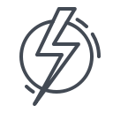

<!-- <div class ="Nav"> 
        <button class="btn btn-primary kweek-btn" (click)="openKweekComponent()">Kweek</button>

</div> -->
<nav class="navbar">
                <span class="navbar-toggle" id="js-navbar-toggle">
                         <i class="fas fa-bars"></i>
                </span>
              
                <ul class="main-nav" id="js-menu">
                        <li>
                                
                                <a href="home" class="nav-links"> Home</a>
                        </li>
                        <li>
                                
                                <a href="" class="nav-links"> Moments</a>
                        </li>
                        <li>
                                
                                <a href="notifications" class="nav-links"> Notifications</a>
                        </li>
                        <li>
                                
                                <a href="#" class="nav-links"> Messages</a>
                        </li>
                        <li>
                           
                        </li>
                        <li >
                                
                                <a href="settings" class="nav-links"> Settings</a>
                        </li>
                        
                        <li>
                                
                                <a [routerLink]="['profile',userName]" class="nav-links"> Profile</a>
                        </li>
                         
                        <li>
                           <button class="btn btn-primary kweek-btn" (click)="openKweekComponent()">Kweek</button>
                        </li>
                        <li>
                          <button class="btn btn-info kweek-btn"  type="submit" >Log Out</button>
                        </li>
                </ul>
                
              
        </nav>
       